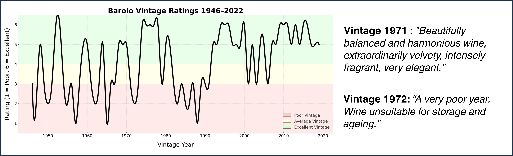
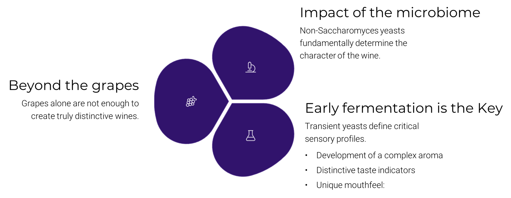

About EnoGen AI
EnoGenAI is the first biotech/AI platform that uses yeast genomics, Artificial Intelligence (AI), and reverse engineering to design precision fermentation for wine. We enable producers to replicate and personalize sensory profiles through custom yeast mixtures derived from AI-based predictive models and genomics. We’ve developed a proprietary dataset and AI algorithms that power our platform, creating a defensible advantage at the intersection of science, data, and taste.
Precision Fermentation: A New Paradigm
EnoGenAI harnesses this knowledge by decoding the genetic and sensory potential of both grapes and yeasts. Through data fusion and AI modeling, we simulate fermentations to predict and optimize aromatic profiles — enabling consistency, personalization, and excellence across vintages.
The Problem: Unpredictable Winemaking
Each wine vintage is a gamble. Environmental factors, vineyard conditions, and microbial dynamics can drastically alter the quality and character of wine from year to year. This inconsistency limits winemakers' ability to reliably reproduce successful aromatic profiles and brand-defining characteristics.
The Wine Microbiome: An Untapped Frontier
At the core of every wine's identity lies a complex, invisible ecosystem known as the wine microbiome. This microbial community, composed of bacteria, yeasts, and fungi, thrives on grape skins, in the cellar environment, and throughout the fermentation process. While much of traditional winemaking has centered on the inoculation or spontaneous dominance of Saccharomyces cerevisiae, recent studies have highlighted the pivotal role of non-Saccharomyces species in the early stages of fermentation—particularly during the first 48 hours. This initial window, often underestimated, is a period of high microbial diversity and intense biochemical activity. During this phase, yeasts such as Hanseniaspora, Torulaspora, Lachancea, and Metschnikowia metabolize grape-derived sugars and amino acids, releasing a vast array of secondary metabolites including esters, higher alcohols, volatile thiols, and other aromatic precursors. These compounds lay the foundation for the wine’s aromatic complexity, texture, and structural balance long before Saccharomyces takes over and drives the alcoholic fermentation to completion. However, due to their low alcohol tolerance, non-Saccharomyces yeasts are often outcompeted and disappear after the initial stages, rendering their contributions transient but critically influential. Modern metagenomics and next-generation sequencing have made it possible to map and quantify these microbial players, revealing how the composition of the early microbiome directly correlates with sensory outcomes in the final wine. Understanding and manipulating this microbial succession opens a powerful new dimension for precision enology—transforming the fermentation process from a largely empirical art into a controllable, data-driven ecosystem. By targeting the wine microbiome as a design variable rather than a passive background, winemakers gain the ability to unlock new styles, enhance consistency, and express terroir with unprecedented fidelity.
Why Non-Saccharomyces Matter
While Saccharomyces cerevisiae eventually dominates fermentation, the first 48 hours are crucial. Non-Saccharomyces yeasts like Torulaspora delbrueckii or Hanseniaspora species introduce complex esters, thiols, and other volatile compounds that define sensory impact. Traditional winemaking often overlooks this delicate microbial window.The composition of the first 2 days of fermentation microbiome strongly influences the wine character. After 3 days of fermentation only alcohol resistant Saccharomyces represent more than 99% of all wine's microbiome